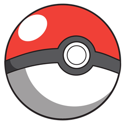

Launcher Alt
PokeIdle
Contas
1
2
3
4
—
XP/h total
—
nesta sessão
—
memória
Automações
Automações
Liga ou desliga em todas as contas online
Ir para
Ir para
Abre a aba em todas as contas (ou só na conta em foco)
Atualizar
Som
Guia
Ajustes
Manter contas logadas
Ao reabrir o launcher, entra direto sem pedir login
Bloquear rastreadores
Corta anúncios/analytics da página: menos RAM. Vale ao reabrir.
Modo otimizado
Sem animação de golpes e números de dano
Night Mode
Tema escuro do jogo
Layout
Como as contas são organizadas
Automático
Lado a lado
Empilhado
Reiniciar conta pesada
Recarrega se passar do limite de RAM
Nunca
1 GB
1,5 GB
2 GB
3 GB
Modo otimizado e Night Mode valem após atualizar as contas.
—
XP/h
—